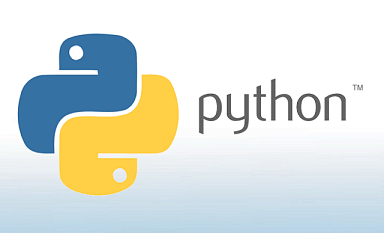
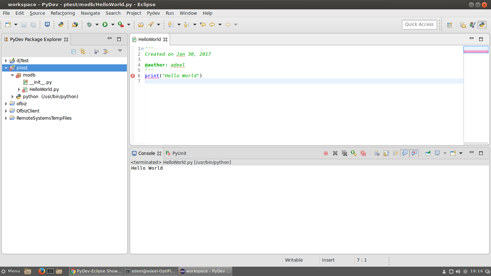

We got acquainted with a new tool called Eclipse, an integrated development environment(IDE) that provides an array of convenient and powerful code editing and debugging tools. We learned about the primary usage, such as the console, to do installations in the Eclipse marketplace and both the PyDev Project and PyDev module usage.
We learned to draw Circle, Taichi, using Canvas in programs, a rectangular area intended for drawing pictures or other complex layouts.
This week we focused on learning bubble sort and Object-Oriented Programming(OOP). In OOP, we learnt what class and object are and that everything in python is a subclass of objects. Also, we learnt about Xampp, and we went through the installation steps.
This week we focused on the assignment. We got the chance to revise what we learned during the last semester, Semester A, which helped us understand more about the Simple Billing App program. We went through the whole process of doing last year's assignment during the lab, which helped us understand what we needed to do for this year's assignment.
This week we worked on the loan table of lab 2, in which I had more practice on the use of Xampp and the steps of exporting files to cgi-bin and March01 directories. Also, we started to do Lab 3, in which I learned about dicttoxml and Xmltodic.
This week we learnt more about classes using Vehicle.py and did practices on it by doing lab3q1 and lab3q2. Also, we have gone through a part of the individual assignment.
This week we learnt about public and private attributes and the accessor method. Also, we learnt to do menuItem 3and 5 of the individual assignment.
 